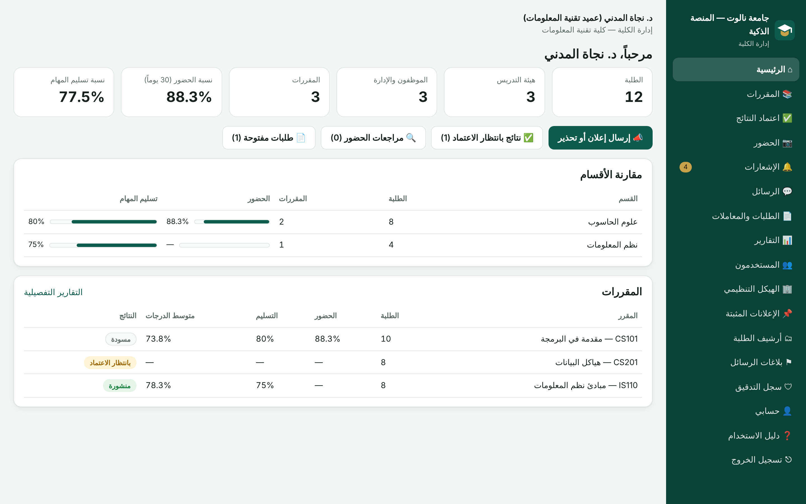

لماذا المنصة؟
الإعلانات تضيع، والحضور بالتوقيع سهل التحايل، والنتائج تتنقل بلا سجل. المنصة تجمع الطالب والأستاذ والإدارة على بيانات واحدة وقواعد صلاحيات واحدة.
يسلّم واجباته من الهاتف، يرى درجاته بعد اعتمادها، ويسجّل حضوره بمسح رمز
ينشر المهام، يفتح الملفات ويقيّمها، ويدير جلسة الحضور بكشف مباشر
تعتمد النتائج، ترسل الإعلانات والإنذارات، وتتابع التقارير والمقارنات
الحضور الذكي
لا عقوبة تلقائية أبداً. ويمكن طلب الموقع وصورة حية في المقررات الحساسة، وتُحذف الصور تلقائياً بعد مدة محددة.
النتائج
مسودة، ثم مرفوعة، ثم معتمدة، ثم منشورة، وكل تعديل يُسجَّل بمن فعله ومتى ولماذا.

الثقة أولاً
مصادقة ثنائية إلزامية للإداريين
تشفير المستندات والرقم الوطني
سجل تدقيق متسلسل يكشف أي تعديل صامت
كل شخص يرى ما يخصه فقط، وعزل كامل بين الجامعات
جدول صلاحيات قابل للتعديل لكل جامعة